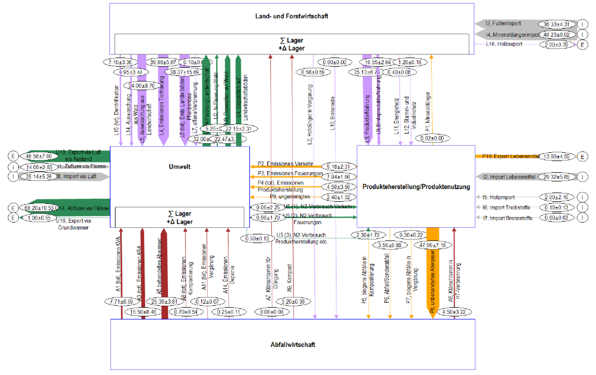

Basics
Was ist Material- und Stoffflussanalyse?
Die Material- und Stoffflussanalyse (MFA und SFA) ist eine naturwissenschaftliche Methode, um Materialflüsse innerhalb von Systemen zu erfassen, zu beschreiben, darzustellen und zu interpretieren (Baccini & Bader 1996). Beispiele von Massenflussanalysen sind:
Organische Verluste aus der Lebensmittelindustrie in der Schweiz (Moserberger et al. 2016): Die Studie zeigt Lebensmittelverluste in der Schweizer Lebensmittelindustrie. Ca. 20% der verarbeiteten Lebensmittel gehen nicht in Produkte, sondern werden als Lebensmittelverluste ausgeschieden. Gemäss der Studie wären drei Viertel dieser Lebensmittelverluste vermeidbar.
Haben wir die richtigen Indikatoren für die Kreislaufwirtschaft - Einblick in das Schweizer Abfallwirtschaftssystem (Haupt et al. 2016): Die MFA des Schweizer Abfallmanagements zeigt, dass die Hälfte der kommunalten Feststoffabfälle rezyliert werden. Der Rest geht in Kehrichtverbrennungsanlagen. Die Studie geht detailliert auf die Recyclingmodelle verschiederen Stoffe wie Glas, PET und Metalle ein. Sie zeigt, dass Sammelquoten nicht ausreichend sind, um die Nachhaltigkeit einer Kreislaufwirtschaft zu quantifizieren, da sie keine Aussage darüber macht, ob die gesammelten Abfälle verwertet werden und in welcher Form sie wieder in den Wirtschaftskreislauf rückgeführt werden.
Materialflussanalysen biogener Abfälle in Indien (Gross et al. 2021): Die Studie stellt Materialflussanalysen des Abfallmanagements in indischen Gemeinden dar und diskutiert Möglichkeiten zur Verwertung biogener Abfälle mittels anaerober Vergärung.
Mithilfe von Stoffflussanalysen (SFA) lassen sich analog bestimmte Stoffe durch ein System verfolgen.
MFA und SFA finden in vielen Bereichen Anwendung, z.B. in der Chemie und im Ingenieurwesen, bei Produktionsprozessen, in der Wirtschaft (Baccini & Bader 1996). MFA/SFA kann somit für eine Vielzahl von Anwendungen und Fragestellungen herangezogen werden, u.a.:
Massen- und Stoffströme quantifizieren und darstellen
Mathematische Modellierung von Systemen zur Analyse des Ist-Zustandes und zur Abschätzung der zeitlichen Entwicklung unter verschiedenen Handlungsoptionen (Szenarienanalyse)
In Kombination mit Lebenszyklusanalysen (LCAs) können Umweltauswirkungen verschiedener Optionen verglichen werden, zum Beispiel im Abfallmanagement der Schweiz (Haupt et al. 2018)
Beitrag zum Systemverständnis verschiedener Akteure
Input in Planung technischer Lösungen
Beitrag zur Stakeholderanalyse, z.B. entlang von Wertschöpfungsketten
Elemente einer MFA bzw. SFA
Folgende Elemente sind in einer MFA bzw. SFA enthalten (Baccini & Bader 1996):
Stoffe sind chemischen Grundbausteine (Elemente oder chemische Verbindungen) aus denen sich Güter, Flüsse und/oder Lager zusammensetzen
Güter sind Stoffe oder Stoffgemische, die vom Menschen wirtschaftlich bewertete Funktionen erfüllen z.B. Smartphones oder Trinkwasser (positiver Wert) oder nicht genutztes Abwasser (negativer Wert). Stoffe sind die chemischen Grundbausteine, während Güter die Stoffe oder Stoffgemische sind, die einen wirtschaftlichen Wert haben und vom Menschen für bestimmte Zwecke verwendet werden. Güter können also aus verschiedenen Stoffen bestehen und werden entsprechend ihrer wirtschaftlichen Bedeutung bewertet und verwendet.
Material ist ein allgemeiner übergeordneter Begriff für Güter und Stoffe (Materialflussanalyse als verallgemeinernder Begriff für Stoffflussanalyse)
Prozesse stehen für Eingriffe wie Transport, Umwandlung, Lagerung und Wertveränderungen von Stoffen oder Gütern, z.B. Transport, Umwandlung, Lagerung und Wertveränderungen
Lager bezeichnen den Bestand von Stoffen oder Gütern innerhalb eines Systems, z.B. auf einer Restmülldeponie oder ein Kompostlager
Flüsse sind pro Zeiteinheit zwischen zwei Prozessen verschobene Stoffe oder Güter
Die Systemgrenze definiert, welche Daten räumlich und zeitlich in die Analyse einfliessen. Räumlich meint hierbei unter anderem die physische oder logistische Ausdehnung eines Unternehmens oder eine Landesgrenze. Zeitlich kann sich z.B, auf ein konkretes Geschäftsjahr beziehen.
Schritte zum Modellieren einer MFA bzw. SFA
Ihre Modellierung von MFA bzw. SFA lässt sich grob in vier Hauptschritten zusammenfassen:
Definition des Systems: In diesem ersten Schritt wird das System konzeptualisiert. Dieses ist durch Prozesse, Güter, mindestens einen Stoff sowie eine Systemgrenze beschrieben. Oftmals geschieht die Systemdefinition durch einen iterativen Prozess im Austausch mit Projektpartnern bzw. Akteuren des zu untersuchenden Systems.
Bestimmung der Material-/Stoffflüsse: In diesem Schritt werden die Daten erhoben, insbesondere die Güterflüsse, die Konzentration von Stoffen sowie Lagerbestände. Die Daten können gemessen werden und müssen oftmals durch Literaturangaben und/oder Schätzungen ergänzt werden.
Simulation der Massen- und Stoffflüsse: Wir nutzen hierzu die Software STAN.
Analyse, Diskussion und Kommunikation: Das System wird dargestellt, plausibilisiert und es werden Sensitivitäts- und Unsicherheitsanalysen durchgeführt. Wichtig ist in diesem Schritt die Diskussion und kritische Reflexion der Ergebnisse sowie im Anschluss die Kommunikation z.B. durch Publikationen oder Vorträge.
Anwendungsbeispiel: Stickstoffflüsse in der Schweiz
Nachfolgend sollen am Beispiel der Stickstoffflüsse in der Schweiz die Möglichkeiten und Anwendungen einer Stoffflussanalyse aufgezeigt werden. In einer Studie zuhanden des Bundesamtes für Umwelt (BAFU 2013) wurde die Entwicklung der Stickstoffflüsse in der Schweiz bis 2020 im Rahmen einer Stoffflusssanalyse analysiert. Es wurden verschiedene Szenarien untersucht, darunter ein Basisszenario und drei Wenn-Dann-Analysen, die mögliche politische und gesellschaftliche Entwicklungen abbilden.

Bitte lesen Sie in dem angesprochenen Bericht die Zusammenfassung und betrachten Sie Abbildung 8. Beantworten bzw. diskutieren Sie die folgenden Fragen:
Welche Prozesse werden in Abbildung 8 dargestellt?
Welches sind die grössten Importflüsse von Stickstoff in die Schweiz? Welches sind die grössten Exportflüsse?
Was sind die wichtigsten Treiber für Stickstoffflüsse in der Schweiz?